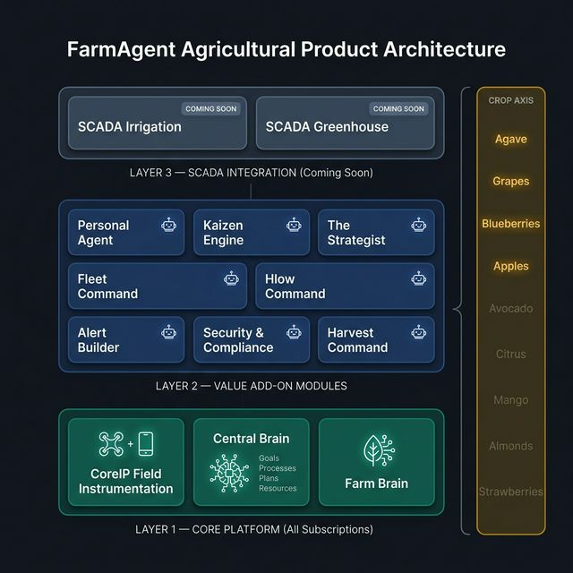
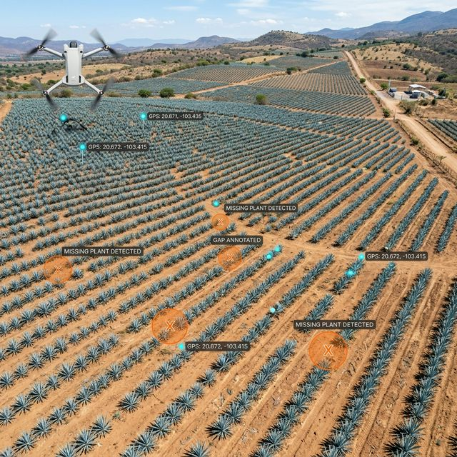
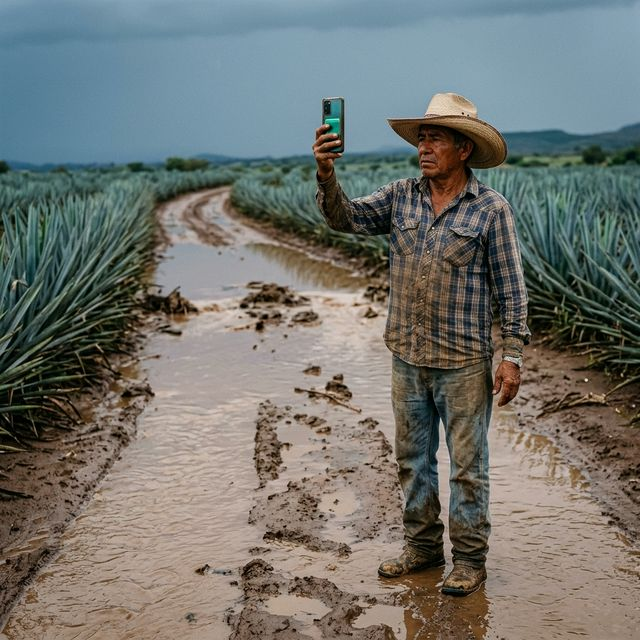
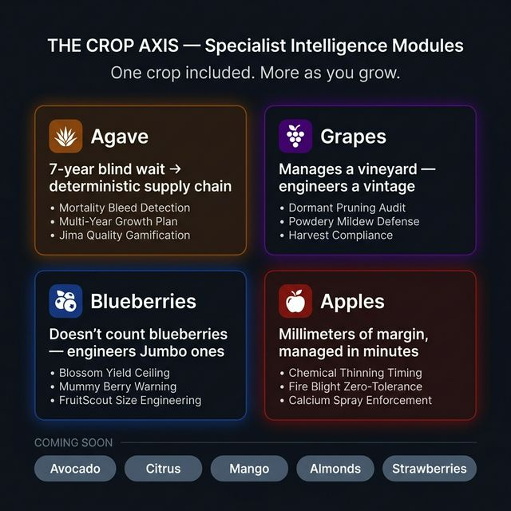

Gestionados a ciegas.
Ya no más.
FarmAgent le da a los productores de agave los ojos, la inteligencia y el sistema operativo para ver exactamente lo que ocurre en su finca — y actuar antes de que le cueste una cosecha.
es una apuesta ciega de 7 años.
A Blue Weber agave estate is a 7-year illiquid investment. Every undetected mortality event, every premature harvest, every poorly executed Jima cut compounds in silence — often for years before the damage appears on the P&L.
- Mortality Bleed — Paper ledgers claim 40,000 plants. A drone survey reveals 36,200. That gap has been silently growing since Year 2, and no one knew.
- Sin visibilidad de producción — La acumulación mensual de biomasa es invisible. Contratos con destilería firmados con intuición.
- Varianza Jima — La calidad del corte determina el azúcar ART. La mayoría no tienen sistema para medirlo.
- Gestión reactiva — Problemas descubiertos en recorridos y reportados verbalmente. La ventana de intervención ya cerró.
see everything.
FarmAgent no es una app agrícola. Es una plataforma de inteligencia por capas que reemplaza la ceguera operativa con visibilidad completa.
- Visión Aérea — CV cuenta cada planta viva, mapea cada brecha y marca cada bloque en declive.
- Visión de Campo — Los smartphones miden producción, tamaño y ubicación con precisión de instrumento.
- Visión Operativa — El Cerebro Central ve recursos, metas, procesos y planes simultáneamente.
- Longitudinal Sight — Cerebro de la Finca surfaces patterns and improvements that no single year reveals.

Ojos en cada mano.
Drone flights and computer vision analysis produce a precise, GPS-anchored picture of every block — annually, reproducibly, without a single worker walking a row.
- Inventario Avanzado — Identifica cada planta viva, calcula la Tasa Exacta de Mortalidad y geolocaliza cada planta faltante como oportunidad de replante.
- Comparación de dosel año a año — Detecta plantas con vigor en declive antes de que las pérdidas sean irreversibles.
- Scouting Dirigido — La IA genera rutas de waypoints GPS que envían exploradores solo donde se necesita atención. Blanket scouting is eliminated.

Field Agent translates operations — scouting, spray runs, Jima harvest shifts — into structured, step-by-step digital workflows on the worker's smartphone.
- Tickets de Trabajo Guiados — Límite de bloque GPS, secuencia de pasos, insumos asignados, criterios de calidad. Sin conexión.
- Control de calidad Jima integrado — Fotografía el corte → CV califica A, B o C antes de que el trabajador avance.
- Re-ruteo autónomo — Un trabajador fotografía un camino inundado. FarmAgent re-enruta la caravana automáticamente.
- Verificación de EPP — Fotografía del equipo al inicio. EPP verificado antes de que la tarea se desbloquee.

- Báscula Visual — La IA convierte imágenes de la cámara de profundidad en estimaciones de masa volumétrica para los blancos de piña. El pulso mensual de producción, bloque por bloque.
- Calibradores Visuales — Una tarjeta de referencia establece la escala. La IA calcula mediciones al milímetro en menos de 10 segundos. 40–60 plantas/hora vs. 8–12 con calibradores físicos.
- Localizador Visual — Marca una planta enferma en el Agente de Campo. El pin aparece en el mapa de todos los miembros del equipo en segundos.

For agave, Gestión de Planes is the platform's most differentiated capability. The full lifecycle from hijuelo planting through terminal Jima is managed as a single, dynamically sequenced multi-year plan.
- Secuenciación de cohortes — Los bloques de crecimiento lento se cosechan primero; los de alto rendimiento siguen acumulando biomasa.
- Replanificación dinámica — Un evento de mortalidad o cambio de contrato activa una revisión automática del plan en tiempo real.
- Compromisos con destilería — Pronósticos de producción comparados con contratos activos, señalando la exposición con anticipación al ciclo de cosecha.
An A-Grade Jima cut delivers 15–22% higher ART sugar content than a C-Grade cut. FarmAgent grades every cut with AI — built directly into the Jima work ticket.
- El trabajador fotografía el corte → CV califica A/B/C antes de pasar a la siguiente planta.
- Cortes subestándar marcados al instante. Ticket de retrabajo enviado al líder de cuadrilla inmediatamente.
- La Bandeja del supervisor muestra primero los cortes problemáticos.
$68,000–$113,000 USD por temporada de cosecha recuperados en la puerta de la destilería.
- Corpus de Inteligencia Agavera — Curvas de crecimiento del Azul Weber, modelos de acumulación ART, ciclos de presión de picudo, benchmarks regionales de mortalidad — integrados en cada decisión de campo.
- Continual Improvement — Lean/Kaizen principles applied to operations. Cerebro de la Finca surfaces cost reduction opportunities based on your estate's own execution telemetry.
- Inteligencia de Negocio — Modelado de COGS, estructuración de contratos con destilerías, planificación de capital multi-cohorte.

a cada rincón.
Every drone count, tonnage forecast, Jima quality score, and plan milestone accessible through a single natural language conversation.
The Personal Agent knows your goals, resources, processes, and active plans. It answers in plain Spanish or English — with your actual field numbers behind every response.
⚗️ Cumplimiento Químico
- Inventario de depósito en tiempo real — números de lote, fechas de caducidad, aplicaciones autorizadas
- Pre-Cosecha Interval enforcement — blocked before prescription approval
- Paquetes de auditoría GlobalG.A.P. y SQF a demanda
🦺 Worker PPE Compliance
- CV verifica la clase correcta de EPP antes de que cualquier tarea de alto riesgo comience
- La IA verifica el EPP correcto para el agroquímico específico en uso
- Registro de EPP verificado por foto para cada trabajador, en cada tarea
Worker comp claim without PPE records: $150K–$500K+ liability.

what you protect.
- Technology Core
- Cerebro Central
- Módulo de Cultivo Agave
- Cerebro de la Finca
- Personal Agent
- Módulos Adicionales
- Todo en Starter
- Cerebro de la Finca
- Personal Agent
- Constructor de Alertas
- Módulo de Cultivo Agave
- Suite de Cumplimiento
- Todo en Pro
- Motor Kaizen
- El Estratega
- Comando de Flotilla
- Cosecha Command
- Suite de Cumplimiento
Per-hectare annual subscription. Pay for the hectares you enroll and the modules you activate. All tiers include the Módulo de Cultivo Agave.
will outperform the ones that can't.
Start with aerial inventory on your existing blocks — see your mortality rate, your replanting window, and your monthly production trajectory in the first 90 days.
Solicitar una Demo